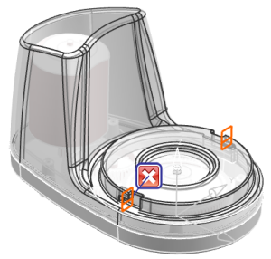
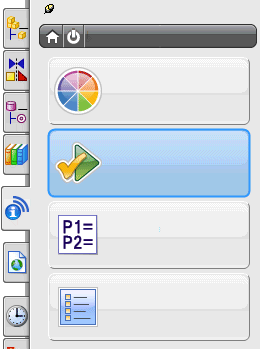
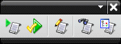

Check-Mate
Check-Mate 是用于检查部件、装配和图纸的质量保证测试的集合，以确保：
-
符合公司设计标准
-
使用最佳做法
-
满足建模质量标准

如何与 Check-Mate 交互取决于您在公司的角色，是设计者、项目经理、程序员，还是系统管理员。
-
设计者在 NX 中运行 Check-Mate 测试。运行检查后，他们会检查模型中有问题的区域，并编辑模型以修复问题。
设计者可以从资源条上 HD3D 工具选项卡中提供的 Check-Mate HD3D 工具访问运行 Check-Mate 测试和查看结果所需的所有步骤。

-
项目经理可以通过检查设计项目中多个模型的报告来监视设计质量。他们可以在 NX 或 Teamcenter 中管理生命周期进程。同时，他们还可能使用外部“质量仪表板报告生成器”。
-
站点程序员可以编创特定的测试或测试检查包，以满足您独特的需要。
Check-Mate 工具条或菜单提供了一些编创 Check-Mate 测试所需的更多高级步骤。

- 系统管理员设置计算机系统，因此，所有用户都可以访问所需的测试。他们还会为您的系统配置正确的许可证和环境变量,因此，Check-Mate 可以将日志文件存储在正确的位置。
位于何处？
|
先决条件 |
Check-Mate 运行时许可证 |
|
资源条 |
HD3D 工具选项卡 |
|
工具条 |
Check-Mate 工具条 |
|
菜单 |
分析→Check-Mate |